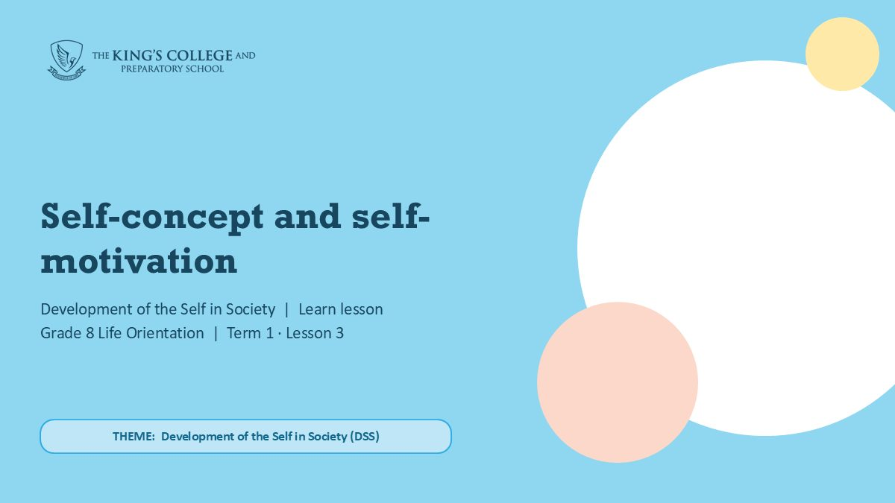

Term 1 · Lesson 3 · Learn lesson
Self-concept and self-motivation
Start here
Today I will
- Explain self-concept and what shapes it
- Change unhelpful self-talk into helpful self-talk
- Know what makes a goal SMART
If you had to describe yourself in three words, which would you choose? Who taught you to see yourself that way?
Words to Know
| Word | Meaning |
|---|---|
| Self-concept | The picture you have of yourself: who you are, what you can do and what you are worth. |
| Self-image | How you see yourself: your looks, abilities and personality. |
| Self-esteem | How much you value and respect yourself. |
| Self-motivation | The inner drive that keeps you going towards a goal, even when no one is watching. |
| Growth mindset | Believing you can get better with effort and practice. |
| SMART goal | A goal that is Specific, Measurable, Achievable, Relevant and Time-bound. |
Slides

Videos
Notes
Starting high school is a time when many learners ask 'Who am I?' The way you see yourself affects how you act, the friends you choose, how hard you try and how you handle failure. Knowing yourself is a start; the next step is growing. Self-motivation, positive self-talk and good goals help you reach your God-given potential.
What is self-concept?
Your self-concept is the picture you have of yourself: who you are, what you can do and what you are worth. It is made up of two parts:
- Self-image: how you SEE yourself, your looks, abilities and personality ('I'm tall, I'm good at drawing, I'm shy'). It can be accurate or unfair to yourself.
- Self-esteem: how much you VALUE and respect yourself ('I like who I am' or 'I wish I were someone else').
Some books also mention the ideal self: the person you would like to become. Your self-concept is learned, so it is not fixed. It can change and grow as you learn new skills and as you hear different messages about yourself.
What shapes your self-concept?
Many influences shape how you see yourself. Each one can build you up (positive) or pull you down (negative).
| Influence | Positive example | Negative example |
|---|---|---|
| Family | Parents who praise effort and encourage you | Constant criticism: 'You'll never be good at anything' |
| Friends and peers | Friends who accept you as you are | Being teased, or changing yourself to fit in |
| Media | Real, encouraging role models | Edited, filtered images that set fake standards of 'normal' |
| Culture | Pride in your heritage and traditions | Strict expectations of how a boy or girl 'should' be |
| Faith | Knowing you are loved by God and made with purpose | Feeling you must earn your worth |
| Community | Belonging at school, church or in a team | Feeling left out or not good enough |
Why self-concept matters
- A healthy self-concept helps you try new things, bounce back from mistakes and say no to pressure.
- A poor self-concept can lead to giving up easily, needing others' approval and making risky choices to fit in.
- Comparing yourself to others, especially on social media, is one of the biggest threats to a healthy self-concept, because you compare your real life to someone else's edited highlights.
A biblical view
Psalm 139:14 says we are 'fearfully and wonderfully made'. As Christians we believe our worth is given by God, not earned through likes, marks or looks. This does not mean we have no faults; it means our value does not change when we fail.
Self-motivation
Self-motivation is the inner drive that keeps you working towards a goal, even when no one is watching or checking. There are two kinds of motivation:
- Intrinsic (from inside): you do it because you enjoy it, feel proud, or want to improve.
- Extrinsic (from outside): you do it for a reward, such as marks, money, praise or a prize.
Both help, but intrinsic motivation usually lasts longer, because it doesn't disappear when the reward does.
Self-talk
Self-talk is the voice in your head that comments on what you do. Negative self-talk ('I'm useless', 'Everyone is better than me') lowers confidence and makes you give up. Positive, realistic self-talk helps you keep going. To change unhelpful self-talk:
- Notice the thought.
- Ask: is it really true? What is the evidence?
- Say it in a fairer, more helpful way.
- Use affirmations: short positive sentences you repeat, e.g. 'I can learn this with practice.'
Unhelpful: 'I failed, so I'll never get it.' Helpful: 'I haven't got it YET. What can I do differently next time?'
Growth mindset
A growth mindset is the belief that your abilities can grow with effort, practice and good help. A fixed mindset believes you are either 'good at it' or 'not good at it' and nothing will change. People with a growth mindset see mistakes as information, keep trying and improve. The small word 'yet' is the heart of a growth mindset.
Potential and SMART goals
Your potential is what you are capable of becoming if you keep developing. Goals turn potential into progress. A good goal is SMART:
| Letter | Meaning | Example |
|---|---|---|
| S | Specific: say exactly what you will do | Improve my Afrikaans vocabulary |
| M | Measurable: how you will know | Learn 10 new words a week |
| A | Achievable: realistic for you | With 15 minutes a day |
| R | Relevant: it matters to you | So I can speak more confidently |
| T | Time-bound: has an end date | By the end of Term 1 |
Weak goal: 'I want to do better at school.' SMART goal: 'I will study Maths for 20 minutes every weekday so that I get at least 60% in the next test at the end of Term 1.'
How self-concept develops
You are not born with a self-concept. It grows as you experience life and as you hear messages about yourself. A child who is often told 'you are clever' or 'you are kind' starts to believe it. A child who is often criticised or compared to others may start to believe 'I'm not good enough'. As a teenager, your body, friendships and interests change quickly, so your self-concept is changing too. That is why the early high school years are such an important time to build a healthy one.
Healthy vs unhealthy self-concept
| A healthy self-concept… | An unhealthy self-concept… |
|---|---|
| Accepts strengths AND weaknesses honestly | Focuses only on weaknesses (or pretends to be perfect) |
| Can handle mistakes and criticism | Feels crushed or angry when corrected |
| Makes choices based on values | Changes behaviour to be liked by others |
| Is happy for others' success | Feels jealous and constantly compares |
Case study: Thabo and the end of rugby
Thabo has played rugby since he was eight. Everyone at school knew him as 'Thabo the rugby player', and he saw himself that way too. This year the school stopped rugby and started basketball. At first Thabo felt lost: 'If I'm not the rugby guy, who am I?' He was nervous about starting a sport where he was a beginner. His friends reminded him of the other things that make him who he is: he is loyal, funny, a hard worker and a natural leader. Slowly he realised that his worth was never only about rugby.
Questions to think about: Which part of Thabo's self-concept was shaken? Which influences helped him (friends, family, faith)? How can a change like this become a chance to grow?
Building a healthier self-concept
- Notice what you are good at and write it down; also notice what you are learning.
- Limit time with media that makes you compare yourself to others.
- Spend time with people who build you up.
- Try new things: every new skill adds to your self-image.
- Remember that your worth comes from being made and loved by God, not from performance.
Worked exam answer
Question: Discuss how social media can influence a teenager's self-concept. (2 x 2) (4)
Answer: Teenagers compare themselves to edited photos of influencers ✓, which can make them feel their own bodies are not good enough and lower their self-esteem ✓. They may measure their worth by the number of likes they get ✓, which makes their self-concept depend on other people's approval ✓.
Where motivation comes from
Motivation is what gets you started; habits are what keep you going. Most people feel motivated at the start of a term but lose energy after a few weeks. That is normal. Successful learners don't wait to 'feel like it'. They create routines (for example, homework straight after supper) so that work happens even on days when motivation is low.
Fixed mindset vs growth mindset
| Situation | Fixed mindset says… | Growth mindset says… |
|---|---|---|
| A low test mark | 'I'm just not clever.' | 'What can I change in how I study?' |
| A new sport | 'I'm not sporty.' | 'Everyone starts as a beginner.' |
| Criticism from a teacher | 'She doesn't like me.' | 'This feedback shows me how to improve.' |
| Someone else succeeds | 'They're just lucky.' | 'What can I learn from how they did it?' |
Case study: Mia's Maths comeback
Mia got 48% for her first Grade 8 Maths test. She cried and told herself she was 'stupid at Maths'. Thabo reminded her how she had struggled with swimming in Grade 6 but made the team after practising every afternoon. Mia decided to treat Maths the same way. She set a SMART goal: 'I will practise Maths for 20 minutes every weekday and ask my Maths teacher for help with anything I don't understand, so that I get 60% in the next test at the end of Term 1.' She also changed her self-talk to 'I don't understand this YET.' In the next test she got 61%.
Questions to think about: Find each part of Mia's SMART goal. How did her self-talk change? Who supported her?
Goals in different areas of life
- School: marks, study habits, being organised.
- Health: sleep, exercise, eating well.
- Relationships: being a better friend, spending time with family.
- Faith and character: kindness, honesty, serving others.
- Short-term goals (this week) help you reach long-term goals (this year, after school).
Worked exam answer
Question: Differentiate between intrinsic and extrinsic motivation. (1 x 2) (2)
Answer: Intrinsic motivation comes from inside, for example enjoying a subject ✓, whereas extrinsic motivation comes from outside rewards, for example marks or money ✓.
Be able to define self-concept, differentiate between self-image and self-esteem (use 'whereas'), and explain how ONE influence can affect self-concept (statement + effect). Also practise turning a vague goal into a SMART goal, and rewriting negative self-talk with 'yet'.
My self-concept is learned, so it can grow. Add the word 'yet', and give your dream a deadline.

If God made you 'fearfully and wonderfully', whose opinion of you matters most?
In class: My self-concept shield
- Draw a shield with four parts.
- Part 1: three words that describe you.
- Part 2: something you are good at.
- Part 3: a person who builds you up.
- Part 4: one SMART goal for this term.
Test yourself
- What is the difference between self-image and self-esteem?
- Name three influences on self-concept.
- What does the 'M' in SMART stand for?
Show answers
1. Self-image is how you see yourself; self-esteem is how much you value yourself. 2. Any three of family, peers, media, culture, faith, community. 3. Measurable.
Finished early?
Help Aarav turn a vague wish into a SMART goal.
- Aarav says: 'I want to be fitter.' Write this in your LO book.
- Rewrite it as a SMART goal for him (what he will do, how much, how often, why, and by when).
- Underline and label each letter: S, M, A, R and T.
- Write one positive 'yet' sentence Aarav could say to himself on a hard day.